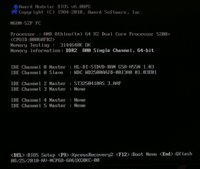
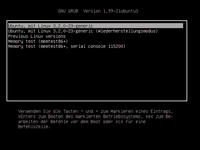

Bootvorgang
Dieser Artikel wurde für die folgenden Ubuntu-Versionen getestet:
Dieser Artikel ist größtenteils für alle Ubuntu-Versionen gültig.
Zum Verständnis dieses Artikels sind folgende Seiten hilfreich:
Booten bezeichnet das Starten bzw. Hochfahren eines Computers nach dem Einschalten (Kaltstart) oder einem Warmstart ("Neu starten" bei der Abmeldung). Dabei werden Basisprogramme des BIOS/UEFI ausgeführt und anschließend das Betriebssystem gestartet.
BIOS und UEFI¶
Der Bootvorgang selbst ist historisch gewachsen und wurde wegen der damaligen Platzprobleme (wenig Speicherplatz) auf viele Einzelschritte aufgeteilt, die Schritt-für-Schritt nachgeladen werden. Auf den meisten Rechnern, die vor 2012 verkauft wurden, kommt noch der BIOS-Modus zum Einsatz. Neuere Computer, insbesondere solche mit vorinstalliertem Windows 8, booten im EFI-Modus. Sofern EFI aktiv eingesetzt wird, kommt "intelligenter" Programmcode viel früher im Bootprozess zum Einsatz. EFI kann man dabei als eigenständiges, zwischengeschaltetes Betriebssystem verstehen, das umfangreiche Aufgaben übernehmen kann und weitere Komponenten in einem eigenen Dateisystem innerhalb des Ordners /EFI vorhält. Auch auf UEFI-Systemen ist weiterhin ein BIOS im Einsatz. Mehr Details sind der Artikelserie EFI Bootmanagement zu entnehmen.
Abgrenzung BIOS/UEFI¶
Das alte BIOS wird nicht komplett durch UEFI ersetzt. Dinge wie der POST (Power On Self Test) oder die grundlegende Konfiguration über das BIOS-Setup werden weiterhin über das BIOS geregelt. Im weiteren Verlauf des Artikels wird der Bootvorgang nach dem BIOS- und/oder EFI-Modus unterschieden.
Bootvorgang¶
Einschalten¶
|  |
| Meldungen des Power on self test (POST) |
Nach dem Einschalten eines Computers wird durch das BIOS (Basic input output system) der "Power on self Test" durchgeführt. Der POST dient dazu, Hardware zu erkennen und ansprechbar zu machen. So wird unter anderem ermittelt, welcher Prozessor verbaut ist, ob ein Bildschirm oder eine Tastatur angeschlossen ist, wie viel Arbeitsspeicher (RAM) zur Verfügung steht und welche Laufwerke vorhanden sind.
In dieser Phase des Bootvorgangs ist es möglich, durch Drücken einer bestimmten Taste in die BIOS-Einstellungen zu kommen. Diese Einstellungen sind je nach System mehr oder weniger umfangreich. Hier lässt sich zum Beispiel die Bootreihenfolge der Festplatten ändern oder die primäre Grafikkarte umstellen. Je nach Modus, verläuft der weitere Bootvorgang etwas anders ab:
BIOS-Modus (siehe unten)
EFI-Modus (Artikelserie zu EFI)
Ist ein Monitor angeschlossen, werden Fehler auf diesem ausgegeben. Da das Grafiksystem nicht funktionieren oder nicht vorhanden sein kann, werden Fehlermeldungen als akustische Tonfolgen  ausgegeben.
ausgegeben.
BIOS-Modus¶
Nach dem erfolgreichen POST sucht das BIOS auf dem ersten Sektor (Master-Boot-Record) der eingestellten Bootfestplatte nach dem Bootloader und gibt die Kontrolle an diesen weiter.
|  |
| GRUB-Auswahlmenü |
Da der Platz im Bootsektor mit 440 Bytes sehr gering ist, arbeiten die meisten Bootloader (bei Ubuntu ist das derzeit GRUB 2) in mehreren Stufen. Die erste Stufe kennt dabei nur die genaue Lage und die Länge der zweiten Stufe auf der Festplatte. Die zweite Stufe enthält Dateisystemtreiber und kann damit zum Beispiel Dateien aufrufen und weitere Stufen laden und/oder ein Bootmenü anzeigen.
GRUB 2 kann auch andere Bootloader per "Chainload" aufrufen. So ist es möglich, das GRUB 2 den Bootloader von Windows oder anderen Betriebssystemen lädt.
Der Bootloader oder Bootmanager hat folgende Aufgaben:
Er bietet die Möglichkeit, Bootoptionen an den Kernel zu übergeben
Den Betriebssystemkernel (/boot/vmlinuz-KERNELNUMMER) laden und starten
Die initiale RAM-Disk (Initramfs) im Speicher erstellen
Danach übernimmt der Kernel den weiteren Bootprozess.
Übernahme des Starts durch den Kernel¶
Nachdem der Kernel gestartet wurde, wird der Inhalt von /boot/initrd.img-KERNELNUMMER-generic in die RAM-Disk entpackt und als erstes das Root-Dateisystem eingehangen. Somit kann der Kernel auf die in diesem Dateisystem enthaltene Verzeichnisstruktur zugreifen und startet als ersten Prozess das Programm /sbin/init. Init steuert nun den weiteren Startvorgang und lädt benötigte Kernelmodule (Treiber). Lässt man sich alle Bootmeldungen anzeigen, ist diese Phase des Bootvorgangs an Meldungen wie
Begin: Loading essential drivers ... done.
Begin: Running /scripts/init-premount ... done.
...
zu erkennen. Normalerweise wird jedoch der Bootsplash Plymouth angezeigt, der (ebenfalls von der RAM-Disk geladen) die Bootmeldungen zugunsten einer optisch ansprechenderen grafischen Anzeige versteckt.
Busybox¶
Werden beim Ablauf von init schwerwiegende Fehler entdeckt, startet BusyBox. Busybox ist ein Minibetriebssystem und stellt eine Shell zur Eingabe und Ausgabe bereit. Der Befehlssatz von busybox ist jedoch eingeschränkt und die enthaltenen Befehle können von denen des eigenen Systems abweichen. Durch die Eingabe von help kann man sich alle vorhandenen Befehle anzeigen lassen.
Einbinden der Root-Partition¶
Nach der Überprüfung der in der Datei /etc/fstab enthaltenen Partitionen wird das Root-Dateisystem durch pivot_root  von der RAM-Disk auf die Root-Partition des realen Datenträgers verlagert. Die RAM-Disk ist nach Abschluss der Verlagerung nicht mehr notwendig und der benutzte Speicher wird wieder freigegeben. Nach dem Start von init und der Dienste ist der eigentliche Bootvorgang abgeschlossen.
von der RAM-Disk auf die Root-Partition des realen Datenträgers verlagert. Die RAM-Disk ist nach Abschluss der Verlagerung nicht mehr notwendig und der benutzte Speicher wird wieder freigegeben. Nach dem Start von init und der Dienste ist der eigentliche Bootvorgang abgeschlossen.
Wird mittels Diensten auch ein Displaymanager gestartet, übernimmt dieser den Start einer Desktop-Umgebung. Ohne Displaymanager erscheint eine textbasierte Anmeldung (login).
Start der Desktop-Umgebung¶
Wird ein Displaymanager gestartet, übernimmt dieser das Starten in eine grafische Umgebung. Dazu wird
der XServer gestartet
aktuelle Spracheinstellungen aus /etc/default/locale ausgelesen
der grafische Anmeldedialog angezeigt
Nach Eingabe des Benutzernamens wird nun die entsprechende grafische Sitzung bzw. der Desktop gestartet.
Schematischer Ablauf¶
| Vereinfachtes Schema eines Standardablaufs mit dem Bootloader GRUB 2 | |
| Bedeutung | |
| 1. | Einschalten des Computers und den "Power-on self-test" (POST) durchführen, inkl. Grafikkarte verfügbar machen. |
| Sobald die Grafikkarte eingerichtet ist, kann man weitere Hinweise/Fehler auf dem Bildschirm ablesen und, sofern notwendig, in das BIOS-/EFI-Setup wechseln. Dies geschieht über die F -Tasten oder bei einigen Boards mit Esc oder Entf . In der Regel wird dazu ein Hinweis am unteren Bildschirmrand gegeben. | |
| 2. | BIOS-Modus: Bootcode des MBR laden, den sog. Urlader. EFI-Modus: EFI-Umgebung starten und die EFI System Partition (EF00) verfügbar machen. |
| 3. | Die GRUB 2 verfügbar machen, um auf Systemdateien, z.B. /boot/grub/, zugreifen zu können. Ein Teil von GRUB 2 liegt je nach Start-Modus in einem speziellen Bereich: |
| BIOS-Modus mit MBR/MPT: in freien, verborgenen Bereichen des Datenträgers (Stichworte: MBR, Partitionsbereich, andere Stelle) BIOS-Modus mit GPT: in einer eigenen BIOS Boot Partition (EF02) EFI-Modus mit GPT: in einer eigenen EFI-System-Partition (EF00) (bei Ubuntu unter: /EFI/ubuntu/grubx64.efi) | |
| 4. | Die Konfigurationsdatei des Bootloaders (grub.cfg) laden und die eingetragenen Betriebssysteme zur Auswahl anbieten bzw. starten. |
| 5. | Die Ramdisk (initramfs) zur Verfügung stellen und den Kernel (linux/kernel) laden. |
| 6. | Das ausgewählte Betriebssystem starten: |
| Das kann ein Basissystem, wie z.B. der Wiederherstellungsmodus, ein Server im Kommandozeilen-Modus oder eine grafische Oberfläche mit Displaymanager sein, aber auch ein fremdes System wie z.B. Windows. | |
Hilfreiche Tastaturbelegung¶
Oft steht man vor dem Problem, dass die Tastatur zu diesem Zeitpunkt noch auf die us-amerikanische Tasten-Belegung eingestellt ist und nicht umgestellt werden kann. Um dennoch die richtigen Zeichen auf einer deutschen Tastatur: zu finden, soll die folgende Tabelle einen Überblick bieten.
{kind=link}
{kind=link}
| deutsche Tastatur | ^ | 1 | 2 | 3 | 4 | 5 | 6 | 7 | 8 | 9 | 0 | ß | ´ | ⌫ |
| US-Zeichen | ` | - | = | |||||||||||
| US-Zeichen mit ⇧ | ~ | ! | @ | # | $ | % | ^ | & | * | ( | ) | _ | + | |
| deutsche Tastatur | Tab ⇆ | q | w | e | r | t | z | u | i | o | p | ü | + | ⏎ |
| US-Zeichen | y | { | } | |||||||||||
| US-Zeichen mit ⇧ | Y | [ | ] | |||||||||||
| deutsche Tastatur | ⇩ | a | s | d | f | g | h | j | k | l | ö | ä | # | |
| US-Zeichen | ; | ' | \ | |||||||||||
| US-Zeichen mit ⇧ | : | " | | | |||||||||||
| deutsche Tastatur | ⇧ | < | y | x | c | v | b | n | m | , | . | - | ⇧ | |
| US-Zeichen | < | z | / | |||||||||||
| US-Zeichen mit ⇧ | > | Z | < | > | ? | |||||||||
Generelle Bootprobleme¶
Im Wiki finden sich eine Reihe von speziellen Lösungen zu Problemen bei bestimmten Hardware-Konstellationen, die dort nachgelesen werden müssen. Im folgenden gibt nur eine kurze Übersicht über die am meisten auftretenden Probleme.
GRUB-Meldungen¶
Der Start des Systems endet mit einem schwarzen Bildschirm und es werden GRUB-Meldungen ausgeben. Dabei handelt es sich nicht um ein Bootproblem, das mit Optionen umgangen werden kann. Zu Problemen und Lösungsansätzen mit dem Bootloader gibt es eigene Artikel unter GRUB 2/Problembehebung.
Keine Partitionen gefunden¶
Es kann vorkommen, dass die Installationsroutine keinen Datenträger oder keine Partitionen findet. Sofern es sich dabei nicht um ein Problem mit der Partitionstabelle handelt (z.B. Apple=APM), siehe dazu die Bootoption nodmraid.
Booten hängt, wie weiter¶
Wenn Ubuntu bei der Animation von Plymouth stehenbleibt, kann man durch Drücken von Esc oder F1 die dahinter verborgenen Meldungen anzeigen lassen und auswerten.
Versuchen, das System mit den Magic SysRQ auf eine "sanfte" Art zum Herunterfahren anzuregen. Ein "hartes" Ausschalten des Rechner sollte nur die letzte Option sein, da es z.B. zu Datenverlust bei bereits eingehangenen Partitionen führen kann.
Die Optionen nomodeset, noapic, nolapic ausprobieren - auch in Kombinationen.
Die Optionen quiet und splash durch
noplymouthersetzten, um den ganzen Startvorgang beobachten zu können und Fehlerhinweise zu finden.Wenn man unter den angebotenen Optionen keinen Lösungsansatz findet, dann kann man über das Forum Hilfe erbitten. Vorher sollte man die Fehlerausgabe aktivieren und den Bootvorgangs beobachten, d.h. die sichtbaren Fehler zum Zeitpunkt des Stopps, abschreiben und im Post unbedingt in Codeblock/Rohformat mit angeben.
Grafikkarten¶
Sofern die Optionen nomodeset oder noplymouth keinen Erfolg bringen, kann man unter Grafikkarten weitere Bootoptionen zur entsprechenden Karte finden.
Multicore¶
Moderne Prozessoren besitzen meist zwei oder noch mehr Kerne, Informationen dazu gibt es unter Multicore.
Festplatten¶
Unter Festplatten-Problembehebungen werden Informationen zur Fehlererkennung aufgelistet.
SSD¶
Beim Einsatz eines Solid State Drive (meist SSD genannt) gibt es einige Einstellungsmöglichkeiten, die unter SSD/Scheduler bzw. SSD/TRIM beschrieben sind.
Links¶
Intern¶
PXE-Boot - Booten über eine Netzwerkverbindung
Wiederherstellungmodus - Die Root-Shell zum Reparieren von Ubuntu
Plymouth - Der grafische "Boot Splash"
dmidecode - Informationen zur Charakteristik des Mainboards ermitteln
efibootmgr - Ein Linuxprogramm zum Bearbeiten des (U)EFI‐Boot-Menüs
Extern¶
Booting Linux: The History and the Future
 - Beschreibung des Linux-Bootprozess, 06/2000 (PDF-Datei)
- Beschreibung des Linux-Bootprozess, 06/2000 (PDF-Datei)Using the initial RAM disk (initrd)
- Wie die initiale RAM-Disk und initrd benutzt wird, 06/2000UEFI-FAQ
- Fragen und Antworten zu UEFI Inside the Linux Bootprocess
- Ausführliche Beschreibung des Linux-Boot-Prozesses, 05/2006Thomas Krenn Wiki:
kernel.org
Kernel-DokumentationBoot Options
im Ubuntu Wikiinitramfs-tools
- Manpage mit Bootoptionencasper
- Manpage zum initramfs-Werkzeug von Ubuntu
- Erstellt mit Inyoka
-
 2004 – 2017 ubuntuusers.de • Einige Rechte vorbehalten
2004 – 2017 ubuntuusers.de • Einige Rechte vorbehalten
Lizenz • Kontakt • Datenschutz • Impressum • Serverstatus -
Serverhousing gespendet von